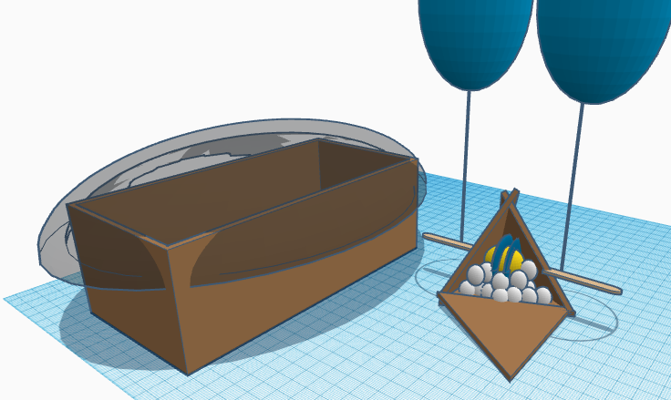
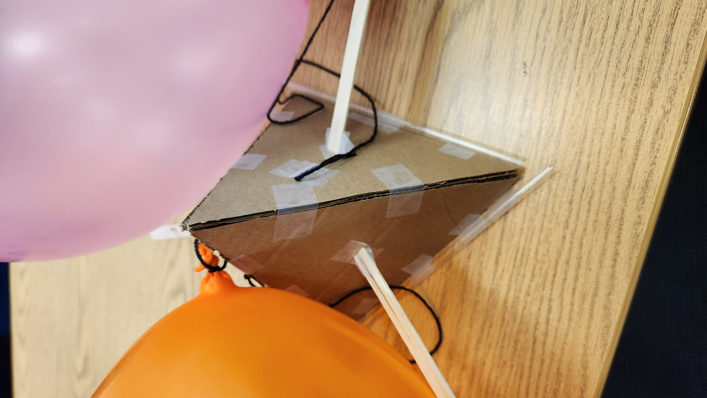
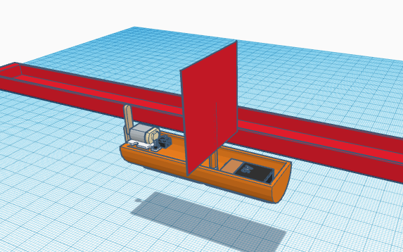

1/19/24 - This week we started our Quater 3 project.
- We chose to do make and code an Arduino car.
> Our idea is an obstacle course, inspired by the real life moose test.
> We will need to utilize many types of engineering types and processes to successfully complete this project.
Overall, I am excited to see what we encounter as we progress through this project.
1/26/24 - We continued on our Quarter 3 project. This week we worked on CADing our design.
- This was an activity we had done 2 weeks ago, where we had messed with Non-Newtonian Fluid.

It lowkey looks like the grimace shake

- For our project, we had completed the CAD on what it is going to look like, and started to research for the electronics.
> Since we are unable to have wheels steer like a real car, we decided to use 6 wheels, where the 2 wheels in the middle will be powered by motors, and invert directions when we need to turn.
> We also had the idea to have a closed top for the electronics so that we can fit all the parts with as little space we can.
> We plan to have the top be able to fold so we can open it up and work with the electronics with little trouble.

> Next week we will continue to work on the electronics CAD and hopefully to get it to work, so we can started building the car with actual materials.
I enjoyed this week as we started the proper engineering process as we started the CAD, ran into problems, and were able to work around the problems. I cannot wait to see what is to come for this project.
2/5/24 - For the past week we worked on finishing our CAD for the electronics and started building our chassis.
- This week we worked with cardboard to start our chassis and worked a little with the motors.

> I was able to solder wires onto both of the motors, giving me more practice with soldering. But sadly, on one of the motors, both of the wires came off and are missing, so I need to solder more wires next week.

> For our chassis, we completed glueing cardboard together and marked areas will we will put the electronics.
- By the end of the week I hope we can create a working code and get the wiring to work.
This weekend I had went shopping for clothes for the new lunar and did homework.
2/13/24 - This week we finished getting the wiring to work and all the electronics into the chassis.
- The wiring was a little difficult to figure out, and I even burnt a controller.
> Eventually, with help from Mr. Poole, we got the wiring to work and get the motors running.

- We also were able to move all the electronics into the carboard chassis, and zip tied the arduino onto the roof.


This week I hope we can get all the electronics fully secured into the chassis, and get the car to move. I also hope we can start working on the code as well.
2/26/24 - For the past two weeks we were able to completed our car and got it to work for the competition.
- After last week, we were able to complete the code and move all the wiring into the new chassis.
- Our car did not perform as we expected since it would drift towards the right whenever it went straight. So it could not make a perfect square.
> Despite not doing the original function, I believe we did the best as we could.
> At least we had a running car with code that would work if it did not have an alignment issue.
- If we made a second car, I would make sure we did everything more neatly and actually put a sensor on so we can go through with the original function we planned
These are pictures of the car the Friday before the week of the competition.


These pictures are the car on competition day.


This was after it broke :(
Here is a promotion video.
I enjoyed this project as it required a lot of effort and skill to build the car. And although we did not have the exact car function we wanted, I believed the car was still really good.
3/4/24 - This week we started on a new project and did a challenge on Thursday.
- The new project we started working on is to create a device to stop an egg from breaking when dropped from 3 stories.
> Our approach is to create a pyramid that will house the egg as it falls. The pyramid will also be attached to balloons. We chose a pyramid, rather than a cube, to conserve tape, since we are limited on materials
> Indside the pyramid, the egg will be surrounded by cotton balls and strapped in by a straw.
> We will also bring a box that is covered by a trash bag to cushion the landing of the pyramid a bit more.
> The only thing I am scared about is if the cushioning of the cotton balls within the pyramid will be enought to stop the egg from breaking.

- We also did a challenge on Thursday, where we created a device out of paper to go into a trash can from 3 stories up.
> The two ideas we came up with is just to crumble it into a ball, and throw it into the trash can, and to make a flat square and throw it like a shuriken.
Overall, the week was very good as we started to finish the CAD on the new project and get our materials ready.
3/13/24 - We were able to test our egg drop this week, which did not go as planned.
- For the egg drop our final design was pretty close to our original plan.
> The only issues we ran into was the box and the trash bag. We had to improvise since we could not cover the box fully
> So, we inflated the bag and put it in the box, acting like a pillow.



- When we tested the drop, I missed the box when dropping the device.
> So, our device did not work as we planned.
:(

During Spring Break, I will be traveling to Paris and Monaco with my family. I will also take an UCI tour when I come ba
3/29/24 - This week we started another project. This time, we are designing a boat that will travel as fast as possible down a gutter.
- We are given few materials, like a cup, paper clips, tooth picks, popsicle sticks, tissue, and other things.
> My teammate and I are planning to use a cup, paper clips, construction paper, a pencil, post it note, and popsicle sticks.
- The way of getting the boat to move is up to us. Whether it is through blowing on it, rubberbands, or a motor.
> We chose to power our boat with a motor, and will attach construction paper wrapped paper clips as propellers.
> The only issue I am worried about is getting the electronics wet.

- Over spring break I had visited Paris and Monaco with my family.
> My favorite part of the trip was probably seeing all the fancy cars in Monaco, and experiencing the culture in France.

Over the next last weeks of school, I hope to get all my grades I need to improve on up to where I need them to be, prepare for AP exams and finals, and continue planning for college.
4/5/24 - The project we worked on is a boat, which was supposed to travel as far as possible, as fast as possible.
- Our idea was to cut a cup in half for the chassis and add a motor to make it move.
> We also lined the interior with construction paper to try and limit the water leaking in.
This was our first test of the boat.
This was our final look of our boat.

- Our boat did not perform as we wanted, but it did move a little.
> I believe our issue was too much weight.
> If we had another chance I think we should spend more time making the boat as neat as possible and figure a better way of keeping it afloat and moving.
- As the school year comes to the end, one of my favorite parts of the class is all the different projects we got to make and test, especially our arduino cars.
> But one thing that was not as favoritable was some of the paper reports we had to do after the projects.
This weekend I have not much plans, except some volunteering on Saturday. I might hang out with some friends since I have been quite busy for the past weekends.